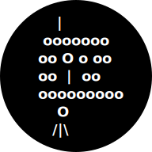

Hra ŠI_E_ICE
Popis: Terminálová implementace známé slovní hry šibenice (oběšenec)
Technologie: jazyk C (ANSI/ISO) / kompilátory MSVC, GCC, DJGPP
- DOS
- Windows
- macOS
- UN*X
- …
OA Kolín
Popis: Školní web pro Obchodní akademii Kolín
Technologie: XHTML+CSS+JS, PHP
- web
Brzděnka+
Popis: Výpočet maximální rychlosti vlaku při nedostatku brzdicích procent
Technologie: HTML+CSS, Brython, SweetAlert2
- web
SerIO
Popis: Jednoduchý sériový terminál (pro Arduino apod.)
Technologie: C#, WPF, .NET SDK
- Windows
HMS Odpočet
Popis: Nástroj na odpočet času a vypnutí PC
Technologie: Delphi (Embarcadero RAD Studio)
- Windows
BýloMetr
Popis: Digitální monitorovací stanice s Wi-Fi, webovým serverem a LCD displejem
Technologie: Arduino IDE, Arduino Uno, ESP8266
- IoT / web
Piškvorky 1D
Popis: (Pouze test Xcode IDE a jazyka Swift)
Technologie: Xcode (macOS 11 / Apple Silicon)
- macOS